Knotted 2025 Campaigns
A year of seasonal campaigns, each built on a single line of copy.한 줄의 카피에서 출발한 일 년치 시즌 캠페인.
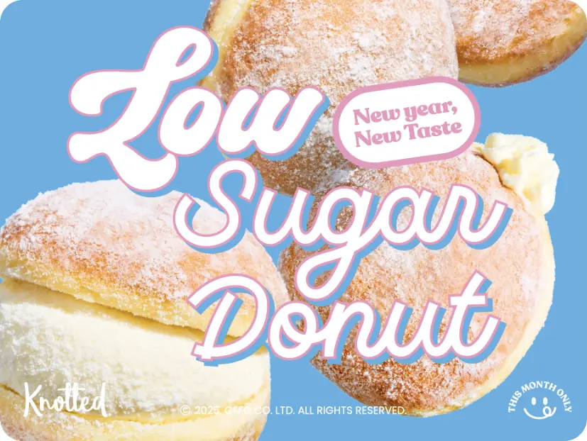
- Client
- GFFG
- Location
- Seoul, Korea
- Year
- 2025
- Role
- Creative Director
- Scope
- Campaign concepts, art direction, key visual production
The brief. A year of seasonal launches for Knotted, each of which had to arrive as more than a poster.
The idea. Build each campaign on a single line of copy: Low Sugar Extra Happy, Every Lover Needs Sweet Hearts, When Life Gets Tough, Just Eat S’more.
What I did. Campaign concepts, art direction and key visual production. Each line ran as a complete system, from the key visual to a full poster series, so a flavour launch arrived as a campaign.
브리프. 노티드의 일 년치 시즌 신제품. 각각이 포스터 한 장 이상으로 도착해야 했습니다.
아이디어. 캠페인마다 한 줄의 카피에서 출발했습니다. Low Sugar Extra Happy, Every Lover Needs Sweet Hearts, When Life Gets Tough, Just Eat S’more.
역할. 캠페인 콘셉트, 아트 디렉션, 키 비주얼 제작. 각 카피를 키 비주얼부터 포스터 시리즈까지 완결된 시스템으로 운영해, 신제품이 캠페인으로 도착하게 했습니다.
Key visuals키 비주얼
One line, one season한 줄, 한 시즌
Key visuals for the seasonal launches: S’more, Sweet Hearts, Strawberries, April, Blossom and summer.시즌 신제품 키 비주얼. 스모어, 스위트 하트, 딸기, 4월, 블라썸, 여름.
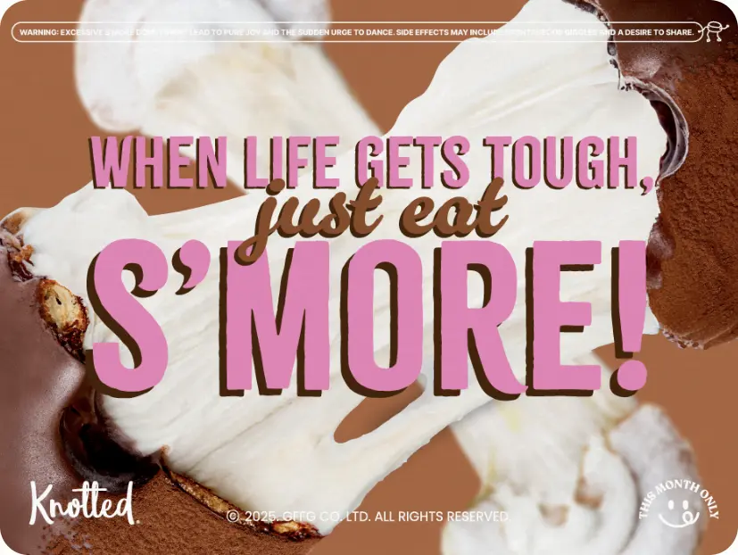
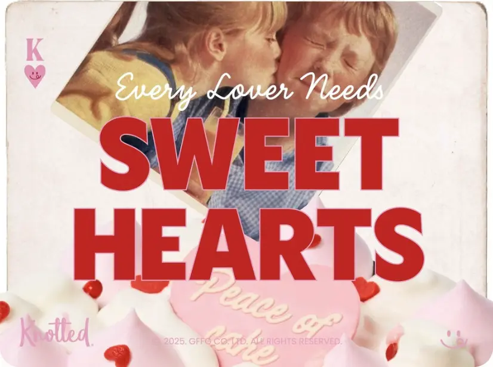
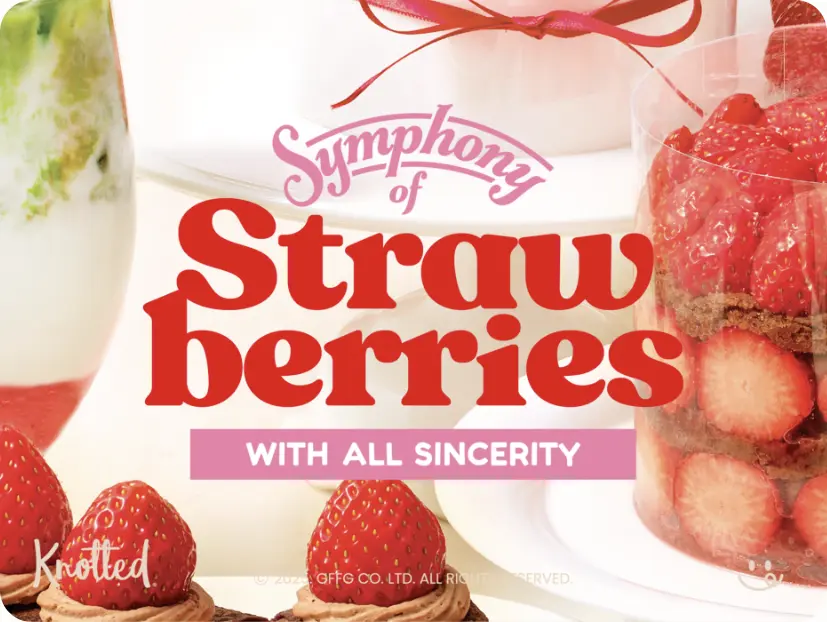
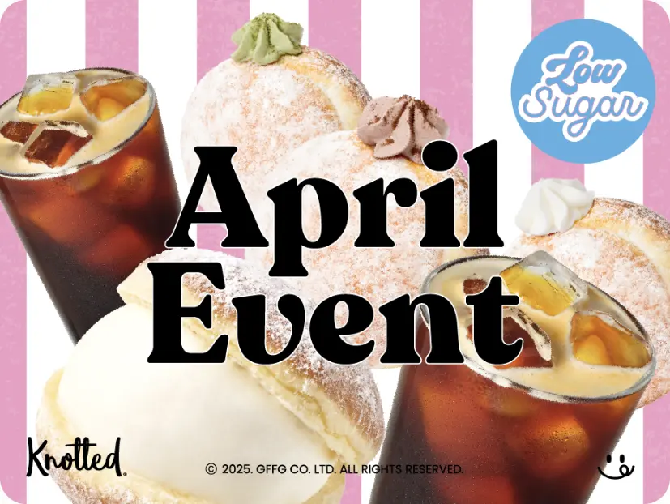
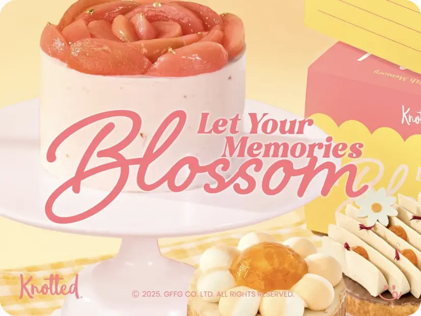
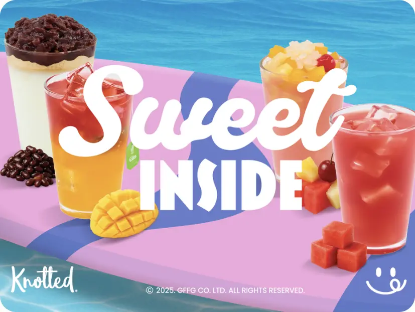
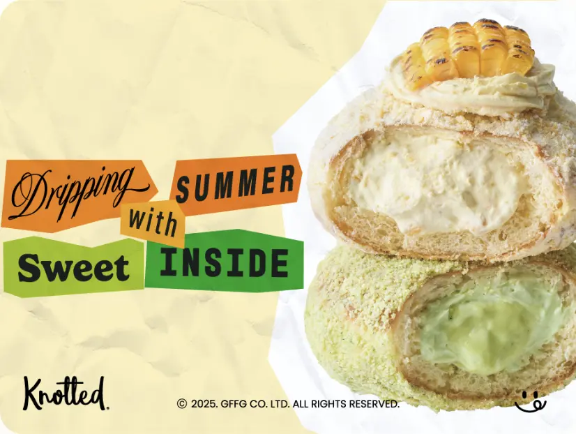
Collaborations콜라보
With other brands다른 브랜드와 함께
Visuals for collaborations and events, including Kyochon and KartRider.교촌, 카트라이더 등과의 콜라보·이벤트 비주얼.
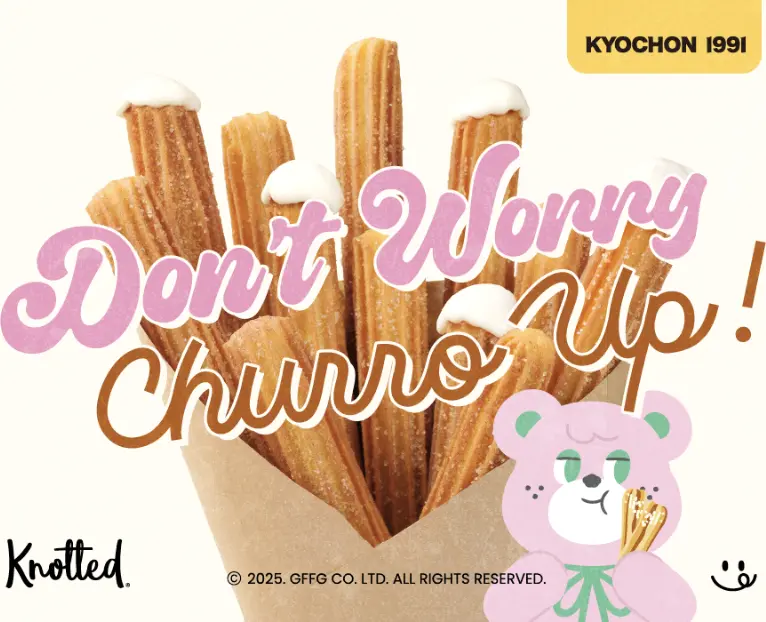
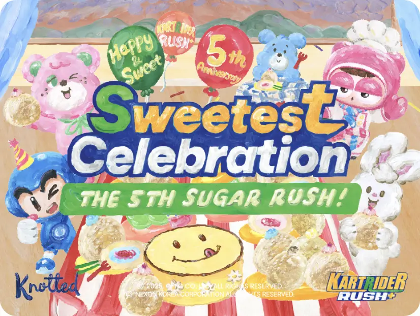
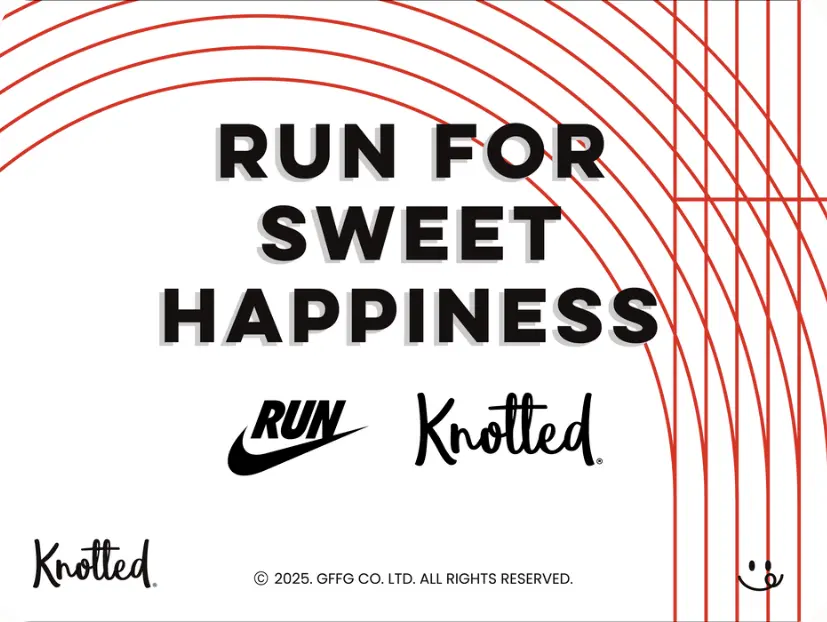
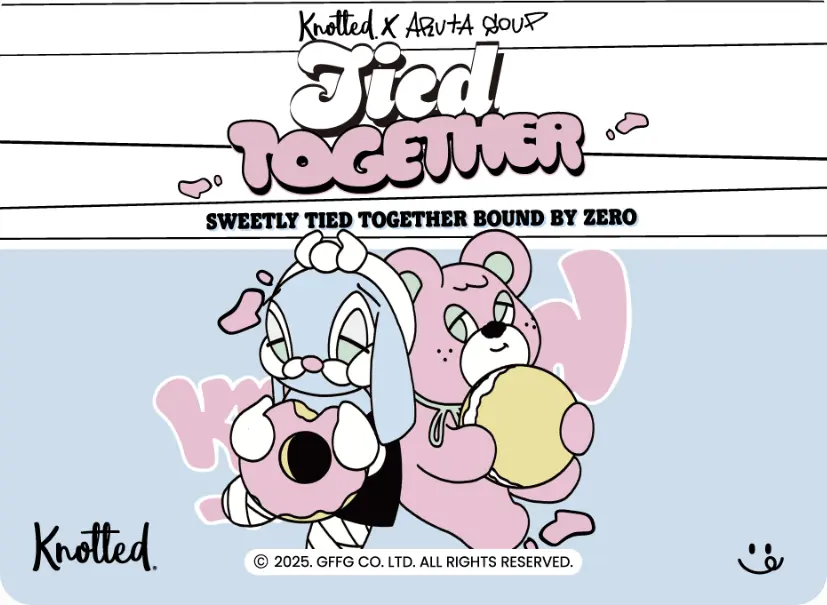
Systems시스템
From key visual to poster series키 비주얼에서 포스터 시리즈로
Each line carried through a full set of posters.한 줄의 카피를 포스터 한 세트로 끝까지.
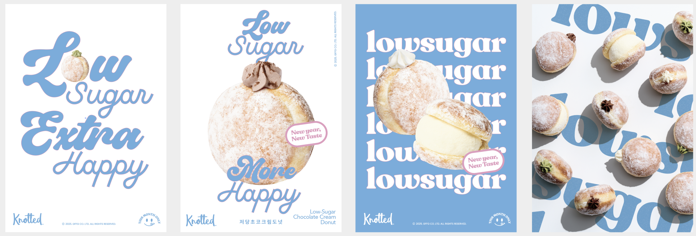
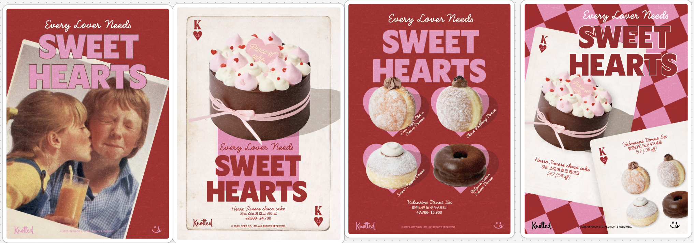
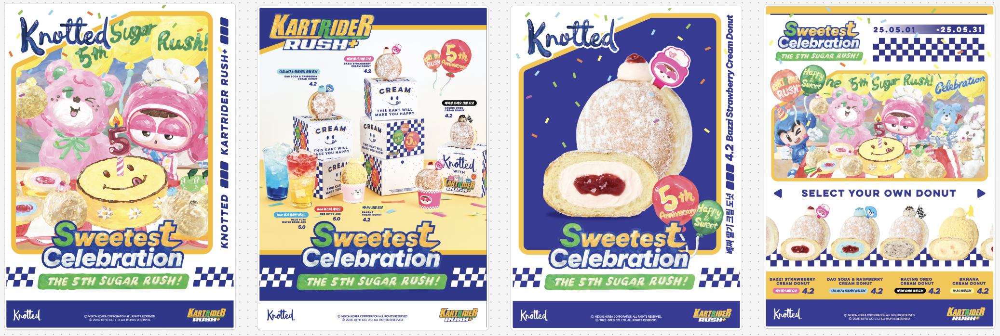
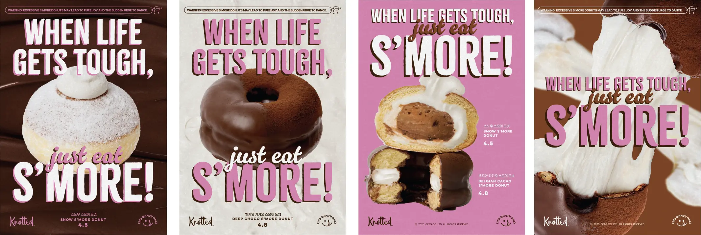
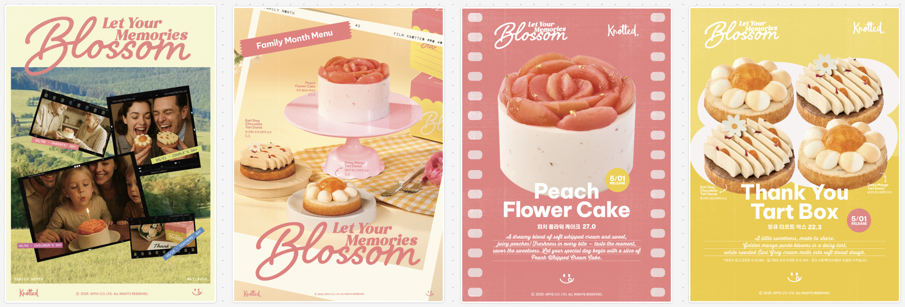
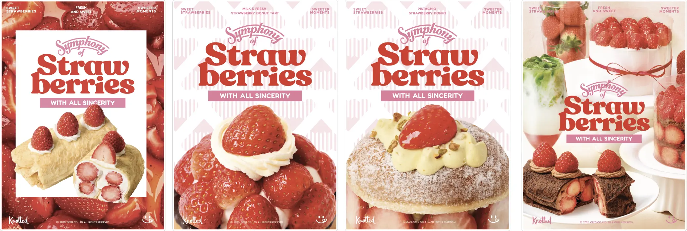